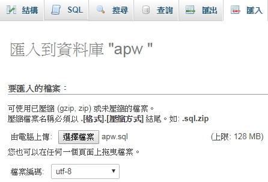

2019/04/16 課程內容 |
|
| 伺服器 VPS |
Vultr - https://www.vultr.com
DigitalOcean - https://digitalocean.com
|
| 工具 Tools |
Notepad++ - npp.7.6.2.Installer.x64.exe Putty - putty_v0.64.exe rsa private key - testkey.ppk [for putty] rsa private key - testkey rsa public key - testkey.pub WS - Websocket Tool |
|
WinSCP - WinSCP
HC Public Key - hcyang_public.key
|
|
| SSH - ssh keygen (login without password) | |
|
OS: Ubuntu 18.04 x64 #Install
root@server:~# apt update #MySQL root@server:~# mysql_secure_installation#(Details, and don't install VALIDATE PASSWORD PLUGIN.) root@server:~# mysql -u root -p mysql> CREATE USER 'hc'@'localhost' IDENTIFIED BY '123456789'; mysql> GRANT ALL PRIVILEGES ON *.* TO 'hc'@'localhost' WITH GRANT OPTION; mysql> FLUSH PRIVILEGES; mysql> quit #phpMyAdmin root@server:~# cd /var/www/htmlroot@test:/var/www/html# wget https://hc.cumi.co/20190416/downloads/phpMyAdmin.zip root@test:/var/www/html# unzip phpMyAdmin.zip #http://IP_Address/phpMyAdmin/index.php #APW Project - Golang root@server:~# cd /var/www/htmlroot@test:/var/www/html# mkdir apw root@test:/var/www/html# cd apw root@test:/var/www/html/apw# wget https://hc.cumi.co/20190416/downloads/apw.zip root@test:/var/www/html/apw# unzip apw.zip root@test:/var/www/html/apw# go get -v golang.org/x/net/websocket root@test:/var/www/html/apw# go build root@test:/var/www/html/apw# nohup ./apw >> logs.txt 2>&1& #http://IP_Address/phpMyAdmin/index.php #建立資料庫: apw [utf8_bin] #import apw.sql  #APW Project - Web root@server:~# cd /var/www/htmlroot@test:/var/www/html# mkdir apw_web root@test:/var/www/html# cd apw_web root@test:/var/www/html/apw_web# wget https://hc.cumi.co/20190416/downloads/apw_web.zip root@test:/var/www/html/apw_web# unzip apw_web.zip root@test:/var/www/html/apw_web# chmod -c 777 ./templates_c #修改檔案: /var/www/html/apw_web/assets/ajax.js [websocket ip & port] #http://IP_Address/apw_web #APW Project - Arduino #修改檔案main.ino (IP, Port, Path)#ESP-12F燒錄方式 |
|